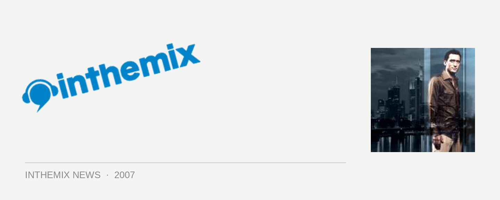

Paul van Dyk swoops down on Cairns, presented by inthemix!
The world’s #1 DJ Paul van Dyk is set to headline one of the biggest dance events ever seen in Northern Queensland as Gatecrasher and Famous team up with the Generationext record label to bring you a massive all-ages daytime event over three stages. Landing in the Canon Park Racecourse on Saturday October 13th, the event will feature 25 acts, 6 internationals along with a massive laser and lighting show, with the whole massive shebang presented by inthemix!
It’ll be an unprecedented event for Cairns dance music fans, and some of the other international talent on the bill will include Bodyrox of Yeah Yeah fame, DJ Schwa, Full Intention, Gleave and Nick Bridges. This will be rounded out by a hot local lineup that includes the likes of TV Rock, Mark James and tyDi, with Gatecrasher and Famous each hosting a stages with a trance and electro music policy respectively, alongside the Open Records stage which will feature the best in minimal, progressive and underground house music.
In terms of Paul van Dyk himself, the man needs little introduction. A fixture on the global dance scene since the early 90s, PVD is riding high at the moment on the back of his new single White Lies featuring Jessica Sutta of the Pussycat Dolls. The single is lifted from his upcoming new album In Between, and we’re told to expect everything from house, electro, progressive and of course trance, in all its different shades and styles. He’ll be giving a special three-hour performance when he touches down in Cairns in October.
Pre-sale tickets to this massive event will be available exclusively from inthemix from Saturday 25th August until 1st September, with a special offer of $5 off for ITM-VIPs during this time. Lineup details are below and check out a clip with Paul talking about his music…
Stage 1 – Gatecrasher
Paul Van Dyk (Gernany)
Nick Bridges (UK)
Gleave (Ireland)
Dr Willis
Scott Alert
Tydi
Stage 2 – Famous
Bodyrox (UK)
TV Rock
Full Intention (UK)
Mark James
The Ellar Sound
Stage 3 – Open Records
DJ Schwa (Czeck)
Urban Monkeys
Suspekt
Onetasteymorsel
Woodsman
Funkform